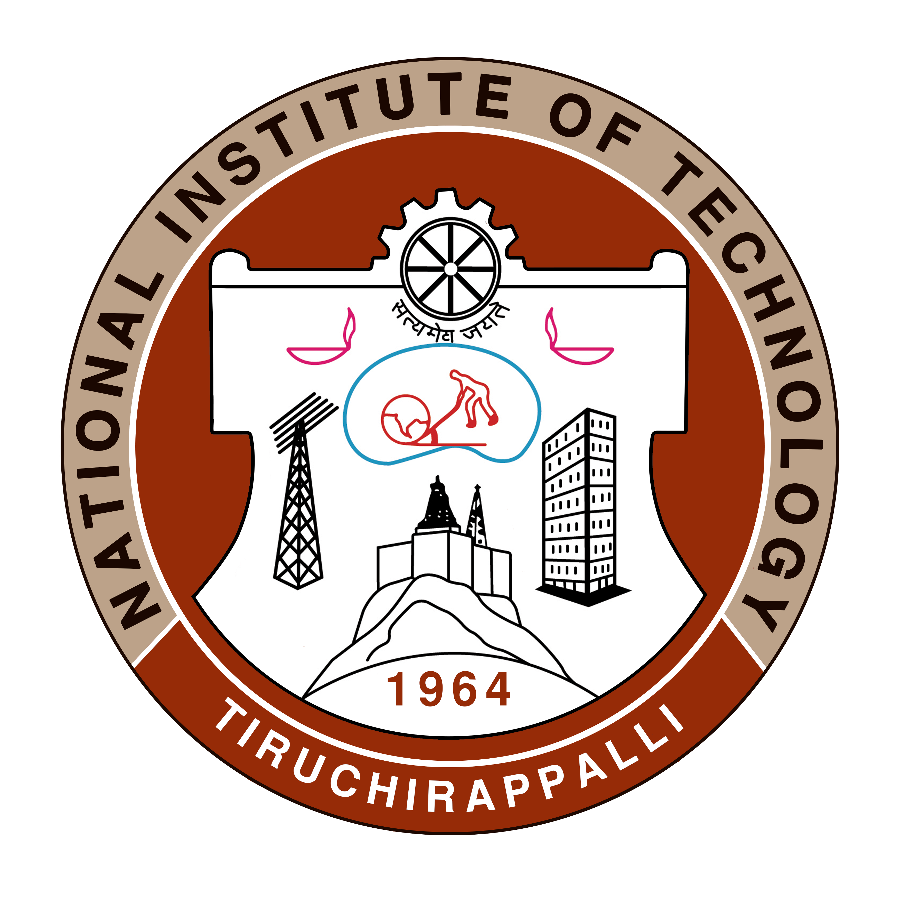
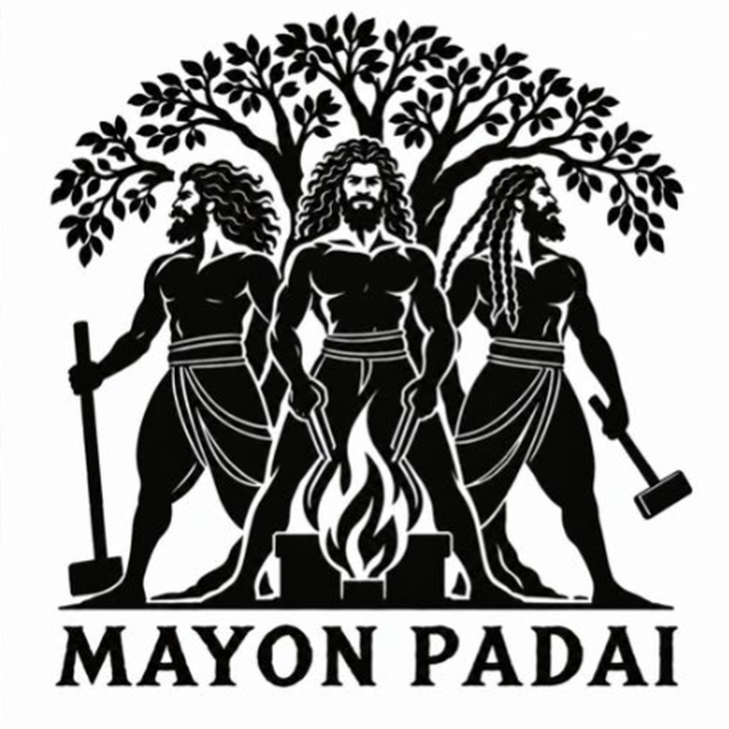

National Institute of TechnologyTiruchirappalli
ARCHAEOMETALLURGY · MATERIALS CHARACTERISATION · DIGITAL RECONSTRUCTION

MAYON PADAI
Archaeometallurgy Arm of the Department of
Metallurgical and Materials Engineering
Official Website
Inauguration
DATE
TIME
12:30 PM
VENUE
MME 111 Room